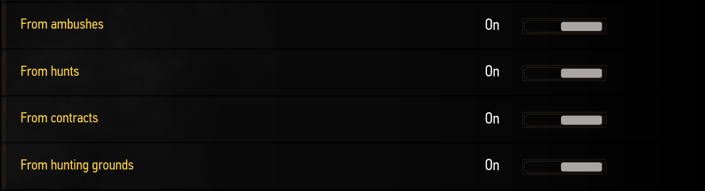
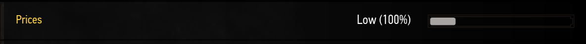
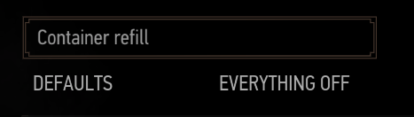
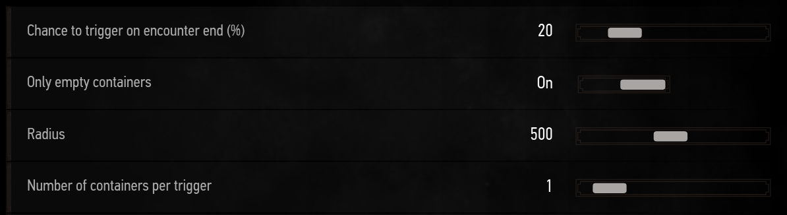

What would be the point of killing monsters if you did not get any reward
for it. RER adds new trophies with the sole purpose of being sold so that
you can earn a few crowns from the monsters you killed. Because trophies
may not sell for much with the economy altering mods you use, it also includes
an option for direct crown drops from creatures if you need it as well as
custom loot for the creatures spawned by the mod.
§The general reward settings
As of RER v2.12 the loot system of the mod has been entirely revamped.
You are able to find a single centralized menu called General reward settings.
Every other feature that needs to generate loot will use the values from this menu.
The settings explained
The rewards consist of four distinct categories, each with four other subcategories for the different levels of loot (the rarities.
For each of these categories you will first find a ratio, it defines how
often you should see the category compared to the other categories.
If you set one ratio to 10 and another at 30,
this means the second category has three times the chance to be selected
compared to the first one.
Below the ratio is the amount of rolls once the category has been chosen.
For some of the categories, such as the gear category, a single roll suffices
whereas some others like consumables may need multiple rolls for it to match
in terms of value.
The third option of each category is the amount of items on a successful rarity roll.
And finally you will find a slider to define the chance for each of the
rarities. Getting a successful roll on one of the rarities doesn't exclude
the other rarities from getting a successful one as well.
This means that in theory you can get an item of every single rarity on a
single roll for the category. When adjusting the values you should keep
that in mind as setting the common rarity to a value like 100 will
simply mean you are guaranteed to get a common item plus some other items
for that category.
If you wish to remove one of these categories from the possible loot pools or
one of the rarities, setting the ratio or the chance to 0 will
do exactly that.
Global chance multiplier
You may have noticed a slider colored in gold at the top of the menu.
It has a direct impact on all the chances you set for the rarities,
a value of 1 will simply multiply all of them by one, which means they
remain unchanged. However if you to set it to 2 then all of them would
be multiplied by two, and if you were to set it to 0.5 then they all would
be halved. You will notice this is what the low and high presets are doing.
Now on top of this explicit multiplier there is also a hidden multiplier
used by the other systems themselves. For example the killing spree loot,
which gives custom loot when you repeatedly slay creatures, links the strength
of your surrounding ecosystems to the chance multiplier. Let's say you are
currently in an ecosystem at 150% of its original strength where you have
been hunting creatures in the area for quite some time, every additional
creature spawned by RER will now get an additional 50% chance to get loot.
The ratio at which ecosystem strength is converted to chance multiplication can
be controlled in the killing spree submenu. The default value is around 1%
ecosystem strength = 0.3% bonus chance.
Another example of this hidden multiplier is the container refill feature.
Every group of creatures you kill has a chance to refill one of the nearby
containers with new loot. The container refill menu offers an additional
chance multiplier that it will use to multiply the global chance multiplier
from the general settings. This allows you to roughly control how often
you should see new loot in your containers.
§Trophies
You can control from which encounters you get RER trophies with the first toggles.
Creatures from an encounter with the trophies disabled won't drop trophies.

You can also change the price of the trophies you get, but note it is not
retroactive and won't change the price of the trophies you already picked up.

And finally, you can edit the chance for the creature to drop trophies.
100 means it has a 100% chance to drop a trophy, 50
means 50% and 0 means no trophies drop from this creature.

§Containers refill
RER has always been about revitalizing old content, or places. This feature
will refill the containers of regions where you kill monsters. It's a pretty simple
feature: you kill monsters, containers around you are filled with new loot.
Containers are: boxes, bags, chests, barrels, ...

But first, let's talk about the presets: the defaults preset
is applied automatically the first time you play with the mod; and second:
the OFF preset to disable the feature.

Now the main sliders:
- chance to trigger allows you to define the chance for
it to happen every time you complete an encounter from RER. Note that it only works
for RER encounters.
- Only empty containers by default the feature only works
on containers that are empty to prevent filling the containers with tons
of stuff.
- Radius controls how far around the player RER will
look for containers.
- Number of containers tells the maximum number of containers that will
be refilled when this system triggers. It is not guaranteed to
reach this number if there are not enough containers around you.